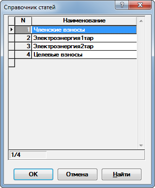
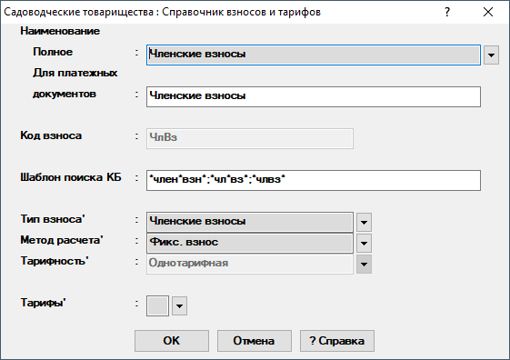

Справочник взносов и тарифов
В данном справочнике хранятся данные по взносам и тарифам.
При открытии будет предложен выбор взноса из списка (рис. 1), в котором можно добавлять, удалять взносы и редактировать их названия.

Удаление взноса возможно только при отсутствии записей в журнале и приведет к полному удалению всех записей, связанных с ним.
После выбора взноса будет отображено диалоговое окно (рис. 2).

Рис. 2. Диалоговое окно редактирования взносаДля выбора нового взноса необходимо снова нажать на
 справа
от графы Наименование полное. При этом, если внесённые изменения
не были сохранены нажатием на кнопку ОК, будет предложено сохранить
их перед редактированием нового взноса.
справа
от графы Наименование полное. При этом, если внесённые изменения
не были сохранены нажатием на кнопку ОК, будет предложено сохранить
их перед редактированием нового взноса.
Рассмотрим поля, доступные для заполнения:
-
Наименование — указывается полное наименование и наименование, которое будет отображено в платежных документах.
-
Код взноса - указывается код взноса. Значение из данного поля используется при формировании счета взноса в плане счетов. Если у разных взносов одинаковые коды, то при формировании хозяйственных операций будут использованы одинаковые счета. Для редактирования данное поле доступно только при добавлении взноса.
-
Шаблон поиска КБ - указываются шаблоны поиска названия взноса при импорте оплат из Клиент-банка. Можно указывать нескольков шаблонов через точку с запятой(;). В шаблоне символ звездочка(*) обозначает любой набор символов.
-
Тип взноса - указывается тип взноса. Выбирается из списка.
-
Метод расчета - указывается метод расчета. Выбирается из списка.
-
Тарифность - указывается тарифность взноса. Поле доступно для редактирования только для типа Электроэнергия.
-
Тарифы - задаются тарифы взноса. Для различных типов взносов и методов расчета предусмотрены отличающиеся друг от друга редакторы тарифов. Более подробно о редакторе тарифов можно прочитать здесь.